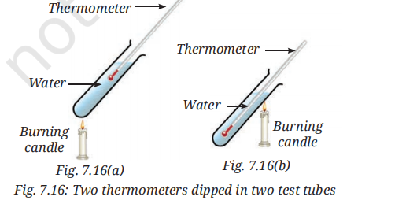

SCIENCE CLASS- 7
CHAPTER-7 (Heat Transfer in Nature)
Let Us Enhance Our Learning
1. Choose the correct option in each case.
(i) Your father bought a saucepan made of two different materials A and B.
Answer: (c) A is a good conductor and B is a poor conductor of heat.
The body of the saucepan (A) should conduct heat efficiently for cooking, while the handle (B) should remain cool enough to hold safely.
(ii) Pins are stuck to a metal strip with wax and heated by a candle.
Answer: (b) Pins I and II will fall earlier than pins III and IV.
Heat is transferred by conduction from the heated end. Therefore, the wax near pins I and II melts first, causing them to fall before the others.
(iii) The most suitable place to fit a smoke detector is:
Answer: (c) On the ceiling
Hot air and smoke rise upwards because they become lighter. Therefore, smoke reaches the ceiling first.
2. A shopkeeper serves cold lassi in a tumbler. The tumbler has a small leak, so another tumbler is placed around it. Will this help keep the lassi cold for a longer time?
Answer:
Yes, this arrangement will help keep the lassi cold for a longer time. The layer of air trapped between the two tumblers acts as an insulator because air is a poor conductor of heat. This reduces the transfer of heat from the surroundings to the lassi and helps it remain cool for a longer period.
3. State with reasons whether the following statements are True (T) or False (F).
(i) Heat transfer takes place in solids through convection.
Answer: False (F)
Heat transfer in solids mainly occurs through conduction, not convection.
(ii) Heat transfer through convection takes place by the actual movement of particles.
Answer: True (T)
In convection, heated particles move from one place to another carrying heat with them.
(iii) Areas with clay materials allow more seepage of water than those with sandy materials.
Answer: False (F)
Clay has smaller spaces between particles, so water seeps more slowly through clay than through sand.
(iv) The movement of cooler air from land to sea is called land breeze.
Answer: True (T)
At night, land cools faster than water and cooler air moves from land towards the sea, forming a land breeze.
4. Some ice cubes placed in a dish melt into water after some time. Where do the ice cubes get heat for this transformation?
Answer:
The ice cubes absorb heat from their surroundings, such as the surrounding air, the dish, and nearby objects. This heat causes the ice to melt and change into water.
5. A burning incense stick is fixed pointing downwards. In which direction would the smoke move?
Answer:
The smoke will still move upwards. The smoke consists of hot gases that are lighter than the surrounding air. Therefore, they rise due to convection irrespective of the direction of the incense stick.
Smoke
↑
↑
↑
|
|
Incense Stick
|
↓
6. Two test tubes with water are heated as shown in Fig. 7.16. Which thermometer will record a higher temperature?

Image Source - NCERT
Answer:
The thermometer in Fig. 7.16(a) will record a higher temperature.
When water is heated from below, hot water rises upward due to convection. In Fig. 7.16(a), the thermometer is placed near the upper region where hot water collects. In Fig. 7.16(b), the thermometer is placed near the top while heating occurs at the upper side, so less heat reaches it.
7. Why are hollow bricks used to construct the outer walls of houses in hot regions?
Answer:
Hollow bricks contain trapped air inside them. Air is a poor conductor of heat and acts as an insulator. Therefore, less heat enters the house from outside, keeping the interiors cooler during hot weather.
8. Explain how large water bodies prevent extreme temperatures in areas around them.
Answer:
Water heats up and cools down more slowly than land. During the day, water remains cooler than land and helps lower the surrounding temperature. At night, water cools slowly and releases heat gradually, preventing the nearby areas from becoming too cold. Thus, large water bodies help maintain moderate temperatures throughout the year.
9. Explain how water seeps through the surface of the Earth and gets stored as groundwater.
Answer:
Rainwater and surface water move through the spaces present between soil and rock particles. This process is called infiltration. Water passes more easily through materials having larger and connected spaces. The infiltrated water gets stored in the pore spaces of sediments and cracks in rocks beneath the Earth's surface. This stored water is known as groundwater. Underground layers that store groundwater are called aquifers.
10. The water cycle helps in the redistribution and replenishment of water on the Earth. Justify the statement.
Answer:
The Sun causes water from oceans, rivers, lakes, and plants to evaporate. The water vapour rises, cools, and condenses to form clouds. These clouds produce rain, snow, or hail through precipitation. The water then flows into rivers, lakes, and oceans or seeps underground to recharge groundwater. Thus, water continuously circulates between the atmosphere, land, and water bodies. This process redistributes water to different regions and replenishes surface water as well as groundwater resources, ensuring a continuous supply of water on Earth.